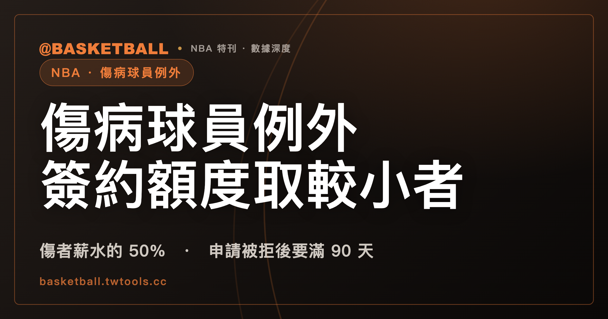

傷病球員例外的簽約額度：2023 CBA 取傷者薪資 50% 與 Non-Taxpayer MLE 金額兩者中較小者
2023 NBA CBA Art. VII §6(c)(1)(ii) 寫明，球隊以簽約方式使用 Disabled Player Exception 時，Replacement Player 該季 Salary 與 Unlikely Bonuses 合計，上限是傷者該季 Salary 的 50% 與相當於 Non-Taxpayer Mid-Level Salary Exception 的金額這兩者中較小的那個。交易換進版另見 §6(c)(1)(iii)。

新手村｜制度入門・傷病球員例外
球員長期受傷時，球隊可以簽或接手一名球員去替換他，這件事在 CBA（Collective Bargaining Agreement，勞資協議）裡有一款專門的例外。本文依據的是 2023 NBA CBA 的 Article VII Section 6(c)，取自官方 PDF 轉出的本機文字快照，取得日 2026 年 9 月 30 日。CBA 會隨協議修訂，之後以官方最新版為準。
「傷病球員例外」是本文使用的中文譯名，不是規則書用語；條文的英文原文是 Disabled Player Exception，下文簡稱這款例外。條文裡的 Replacement Player、Disabled Player、Salary Cap Year 等詞沒有站上既定譯名，本文保留英文原文。Non-Taxpayer MLE 是本文使用的縮寫，條文寫的是 Non-Taxpayer Mid-Level Salary Exception。
讀完之後，你可以拿一個標明「假設」的傷者薪水，自己算出簽約版的薪資上限，也能判斷幾個到期、作廢、被拒後再申請的情境。
傷病球員例外讓球隊簽或接手一名 Replacement Player，補一名因傷病無法上場的球員
依 2023 NBA CBA Art. VII §6(c)(1)，球隊可以依 §6(c) 的規則，簽或接手一名 Replacement Player，去替換一名因 Disabling Injury or Illness 而無法提供比賽服務的球員。這名無法上場的球員在條文裡稱為 Disabled Player，也就是本文說的傷者。「補人」是中文慣稱，條文的原文是 sign or acquire one Replacement Player。
同一款的開頭還寫明，這款例外適用 §6(n) 的規則（Subject to the rules set forth in Section 6(n) below）。§6(n) 的部分內容留到後面談 Team Salary 時再看。
Replacement Player 是 CBA Art. I §1(ccc) 定義的詞。依該定義，它涵蓋兩種球員：依 Traded Player Exception 接手的球員，以及依 Disabled Player Exception 簽或接手的球員。本文只談後一種來源。
簽約版的薪資上限：傷者該季 Salary 的 50% 與 Non-Taxpayer MLE 金額，取較小者
依 2023 NBA CBA Art. VII §6(c)(1)(ii)，球隊以簽約方式使用這款例外時，Replacement Player 該 Salary Cap Year 的 Salary 與 Unlikely Bonuses 合計，上限是下面兩個金額中較小的那一個（原文是 the lesser of）：
| 代號 | 金額 | 條文出處 |
|---|---|---|
| (A) | 傷者該 Salary Cap Year 的 Salary 的 50% | §6(c)(1)(ii)(A) |
| (B) | 等於 Non-Taxpayer Mid-Level Salary Exception 該 Salary Cap Year 金額的數字 | §6(c)(1)(ii)(B) |
Unlikely Bonuses 是條文使用的詞，本文不展開，只照條文把它與 Salary 並列成合計。同一款另外寫明，這份 Replacement Player 的合約可以是一個 Season（may be for one Season），並提供簽約那個 Salary Cap Year 的 Salary 與 Unlikely Bonuses。
(B) 所指的 Non-Taxpayer Mid-Level Salary Exception，定義在同一節的 §6(e)。§6(e)(1) 用該 Salary Cap Year 的 Salary Cap 的百分比寫首年金額，本文不重抄百分比與金額。想看 NBA 官方新聞稿公布的 2026-27 賽季 Mid-Level 金額，可以看本站薪資帽入門，其中 Mid-Level Exception 那一節有表。
照兩個金額取較小者的結構來讀，傷者薪水較低時，50% 那個數字可能比較小；傷者薪水較高時，Non-Taxpayer MLE 金額可能比較小。這是本文對條文結構的讀法，條文本身只寫 the lesser of，文末的練習會用假設數字各算一次。
交易換進版的上限是同樣兩個金額的較小者，再加 $100,000
球隊也可以用交易接手 Replacement Player。依 2023 NBA CBA Art. VII §6(c)(1)(iii)，本文引用其中兩個規定。
第一，被換進的 Replacement Player 必須只剩一個 Season 的合約（must have only one Season remaining on his Player Contract）。
第二，Replacement Player 在被換進的那個 Salary Cap Year 的 post-assignment Salary，上限是 §6(c)(1)(ii)(A) 與 §6(c)(1)(ii)(B) 所述兩個金額中較小的那一個，兩種情形都再加 $100,000（plus, in either case, $100,000）。
簽約版與交易換進版是同一款裡的兩個分項，各自有一段條文，兩者的寫法對照如下：
| 項目 | 簽約版（§6(c)(1)(ii)） | 交易換進版（§6(c)(1)(iii)） |
|---|---|---|
| 薪資上限 | (A)、(B) 兩個金額中較小者 | (A)、(B) 兩個金額中較小者，再加 $100,000 |
| 合約期間 | 合約可以是一個 Season | 被換進者必須只剩一個 Season 的合約 |
申請期間從 7 月 1 日到 1 月 15 日，傷病由 NBA 指定的醫師認定
依 2023 NBA CBA Art. VII §6(c)(1)(i)，針對某個 Salary Cap Year 的申請，無論 Disabling Injury or Illness 何時發生，都可以在該 Salary Cap Year 的 7 月 1 日至 1 月 15 日之間任何時間提出。
申請之後，傷病是否構成 Disabling Injury or Illness，依 §6(c)(4)，由 NBA 指定的醫師（a physician designated by the NBA）認定。這位醫師會審閱相關醫療資料，並在醫師認為適當時檢查球員。
認定的標準寫在 §6(c)(2)：Disabling Injury or Illness 是指依 §6(c)(4) 所述醫師的意見，使該球員 substantially more likely than not 無法打到隨後的 6 月 15 日的任何傷病。substantially more likely than not 是條文原文，本文不另譯成百分比；這一款沒有給數字。
申請過程中球員也有義務。依 §6(c)(5)，球員不得在處理申請的過程中做任何不實陳述（misrepresentation），或不揭露相關資訊。
工會不同意 NBA 醫師的決定時，中立醫師在 3 個 business days 內做出終局決定
依 2023 NBA CBA Art. VII §6(c)(4)，如果球員工會（Players Association）不同意 NBA 醫師的決定，雙方會立即把這件事轉送中立醫師（neutral physician）。
中立醫師在收到資料後的 3 個 business days 內（若有要求，也包含檢查球員之後）做出決定，這個決定是 final, binding, and unappealable，也就是終局、有拘束力、不得上訴。
到這裡，申請與認定的流程可以整理成四步：球隊在 7 月 1 日至 1 月 15 日之間申請；NBA 指定的醫師依 substantially more likely than not 的標準認定；工會不同意時轉送中立醫師；中立醫師在 3 個 business days 內決定。
例外在授予日後的下一個 3 月 10 日到期，球員在使用前復出或被交易則作廢
依 2023 NBA CBA Art. VII §6(c)(3)，這款例外在被授予日之後的下一個 3 月 10 日到期（shall expire on the March 10 following the date the Exception is granted）。
到期之外還有作廢。依 §6(c)(6)，球隊取得例外之後，傷者康復時可以恢復替該隊出賽（may resume playing for the Team）。但如果傷者在球隊使用例外之前恢復出賽，或被交易，該例外即 extinguished，意思是消滅。這一句的前提是「球隊使用例外之前」（prior to the Team's use of its Exception），本文只照這個前提陳述，使用之後的情形不在這一句的範圍內。
例外提供給傷病被知悉時與傷者有合約的球隊，傷者也要留在名單上
依 2023 NBA CBA Art. VII §6(c)(7)，這款例外只提供給在傷病被知悉或理應被知悉之時，與該球員有合約的那支球隊，且限於當時所處的那一段合約期間內。
同一項另有名單條件：球隊要被授予例外，傷者必須從球隊提出申請起，到例外被授予當日止，都留在球隊名單上。
申請被拒後，同一名球員要滿 90 天且有新傷病或傷病加重，才能再申請
依 2023 NBA CBA Art. VII §6(c)(8)，球隊申請被拒之後，就同一名球員不得再提出後續申請，除非同時符合兩個條件：距離第一次被拒已滿 90 天，而且球隊證明後續申請是基於新的傷病（a new injury），或同一傷病的加重（an aggravation of the same injury）。兩個條件缺一個，後續申請就不符合這一款。
同一項另有一句針對之後的 Season。同樣依 §6(c)(8)，球隊為某個 Season 提出申請，不論結果是被授予或被拒，仍可以在之後的 Season 再為同一名球員另行申請。
用了例外之後，計入 Team Salary 的是 Replacement Player 的 Salary
依 2023 NBA CBA Art. VII §6(n)(2)，Disabled Player Exception 被用來簽或接手球員時，計入 Team Salary 的是 Replacement Player 該 Season 的 Salary，而不是例外的金額。這款寫的是「使用之後」的情形；例外在未使用期間如何計入 Team Salary，本文不涵蓋。「佔薪資帽」是球迷俗稱，條文用的詞是 Team Salary。
CBA 裡另有幾款與這款例外有關，各自陳述如下：
- 依 §6(n)(4)，每個 Season 的 1 月 10 日起，未使用的例外在例行賽剩餘期間每日遞減；該款明文把 Traded Player Exception、Minimum Player Salary Exception 與 Disabled Player Exception 排除在遞減的對象之外。
- 依 §4(h)(6)(ii)，球隊若為某個 Salary Cap Year 提出 Disabled Player 例外的申請，不論被授予或被拒，該隊都不得就同一名球員、同一個 Salary Cap Year，依 §4(h) 申請把該球員的薪資從 Team Salary 排除。
- 依 §6(j)(7)，如果球隊在某個 Salary Cap Year 已經（或同時）就某名球員使用過 Disabled Player Exception，就不會因為在同一個 Salary Cap Year 交易這名球員而產生 Traded Player Exception。Traded Player Exception 本身的基本上限，可以看本站的交易規則入門，其中有 §6(j)(1) 的說明。
- 依 §6(m)，球隊不得把各項例外加總或合併，去簽或接手薪資高於任何單一例外所允許的球員。另外，同一款寫明，球隊同時有多個例外可用時，有權選擇要用哪一個。
用假設數字算一次簽約版與交易換進版的上限，再判五個情境
練習一：算額度。 下面的數字全是假設，不是任何真實球隊、球員或賽季的金額。假設某個 Salary Cap Year 的 Non-Taxpayer MLE 金額是 $14,000,000。
| 假設情境 | (A) 傷者薪水的 50% | (B) Non-Taxpayer MLE 金額 | 簽約版上限（較小者） | 交易換進版上限（較小者加 $100,000） |
|---|---|---|---|---|
| 傷者該季 Salary $20,000,000 | $10,000,000 | $14,000,000 | $10,000,000 | $10,100,000 |
| 傷者該季 Salary $40,000,000 | $20,000,000 | $14,000,000 | $14,000,000 | $14,100,000 |
| 傷者該季 Salary $8,000,000 | $4,000,000 | $14,000,000 | $4,000,000 | $4,100,000 |
逐項重算：$20,000,000 的 50% 是 $10,000,000，比 $14,000,000 小，取 $10,000,000，加 $100,000 是 $10,100,000。$40,000,000 的 50% 是 $20,000,000，比 $14,000,000 大，取 $14,000,000，加 $100,000 是 $14,100,000。$8,000,000 的 50% 是 $4,000,000，比 $14,000,000 小，取 $4,000,000，加 $100,000 是 $4,100,000。
練習二：判情境。 下面的球隊全是假設的甲隊、乙隊、丙隊，日期也是假設。請先自己判斷，再對照中間欄。
| 假設情境 | 判斷 | 依據 |
|---|---|---|
| 甲隊在某個 12 月 5 日被授予例外 | 到期日是這個日期之後的下一個 3 月 10 日 | §6(c)(3) |
| 甲隊被授予例外後、使用之前，傷者恢復出賽 | 例外 extinguished | §6(c)(6) |
| 乙隊申請被拒，60 天後再為同一名球員申請 | 未滿 90 天，不符合再申請的條件 | §6(c)(8) |
| 乙隊申請被拒，100 天後再申請，球隊沒有主張新傷病或傷病加重 | 90 天的條件已滿足，但沒有滿足新傷病或加重的條件，不符合再申請的條件 | §6(c)(8) |
| 丙隊提出申請後、被授予之前，傷者離開丙隊名單 | 不符合傷者必須留在名單上的條件 | §6(c)(7) |
常見問題
以簽約方式使用傷病球員例外時，Replacement Player 的薪資上限怎麼算？
依 2023 NBA CBA Art. VII §6(c)(1)(ii)，簽約版的 Replacement Player 該 Salary Cap Year 的 Salary 與 Unlikely Bonuses 合計，上限是兩個金額中較小的那一個：傷者該 Salary Cap Year 的 Salary 的 50%，或等於 Non-Taxpayer Mid-Level Salary Exception 該 Salary Cap Year 金額的數字。交易換進版另見 §6(c)(1)(iii)，是同樣兩個金額的較小者再加 $100,000，且被換進者必須只剩一個 Season 的合約。以上是 2023 CBA 的條文，CBA 修訂後以官方最新版為準。
傷病是誰認定的，工會不同意怎麼辦？
依 2023 NBA CBA Art. VII §6(c)(4)，Disabling Injury or Illness 由 NBA 指定的醫師認定；認定的標準見 §6(c)(2)，是該醫師認為球員 substantially more likely than not 無法打到隨後的 6 月 15 日。工會不同意時，雙方立即轉送中立醫師，中立醫師在收到資料後的 3 個 business days 內做出終局、有拘束力、不得上訴的決定。這是 2023 CBA 的規定，修訂後以官方最新版為準。
申請被拒之後，多久可以再申請同一名球員？
依 2023 NBA CBA Art. VII §6(c)(8)，就同一名球員的後續申請，需要同時符合距離第一次被拒已滿 90 天，以及球隊證明後續申請是基於新的傷病或同一傷病的加重。兩個條件缺一個，後續申請就不符合這一款。同一款另寫明，球隊為某個 Season 提出申請之後，不論被授予或被拒，仍可以在之後的 Season 再為同一名球員另行申請。這是 2023 CBA 的條文，修訂後以官方最新版為準。
用了這款例外之後，計入球隊 Team Salary 的是例外金額嗎？
依 2023 NBA CBA Art. VII §6(n)(2)，Disabled Player Exception 被用來簽或接手球員時，計入 Team Salary 的是 Replacement Player 該 Season 的 Salary，而不是例外的金額。這句寫的是使用例外之後的情形；例外未使用期間如何計入，本文不涵蓋。這是 2023 CBA 的條文，修訂後以官方最新版為準。
資料來源
- 2023 NBA CBA（官方 PDF）：Article I §1(ccc)（Replacement Player 定義）；Article VII §6(c)(1)(i)、(ii)、(iii)、(2)、(3)、(4)、(5)、(6)、(7)、(8)（Disabled Player Exception）；§6(e)（Non-Taxpayer Mid-Level Salary Exception 的定義位置）；§6(j)(7)；§6(m)；§6(n)(2)、(4)；§4(h)(6)(ii)。本文使用的是官方 PDF 轉出的本機保存文字檔，取得日 2026 年 9 月 30 日。
- 「傷病球員例外」「補人」「佔薪資帽」「Non-Taxpayer MLE」為中文譯名、慣稱或縮寫，非規則書用語；條文以英文原文為準。